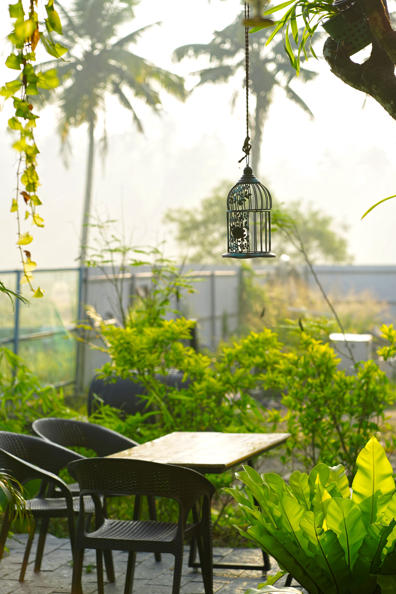
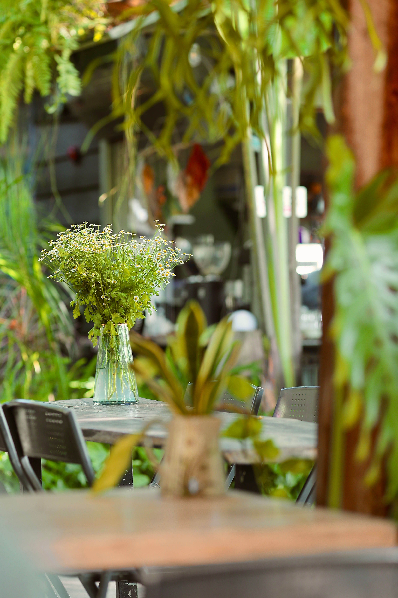
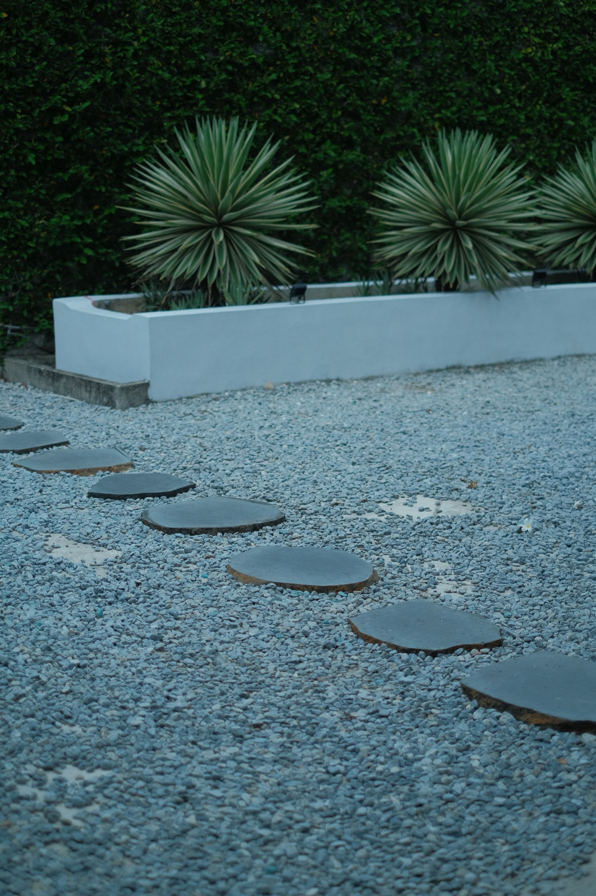

In This Article
- Introduction
- Water Properly During Hot Days
- Protect Plants From Excessive Sun
- Control Humidity and Temperature
- Ventilation and Problem Prevention
- Practical Routine for Vacations and Heat Waves
- Frequently Asked Questions
- Conclusion
Introduction
Summer brings longer days, higher temperatures, and faster evaporation, so plants often need closer observation. The goal is not simply to water more often. Good summer care means adjusting watering, sunlight, ventilation, and protection according to each species and the real conditions around it.
Before changing a routine, identify the plant, its container, the type of growing medium, and how much direct light it receives. A plant on a windy balcony can dry much faster than the same species in a sheltered room. Likewise, a small pot can lose moisture much sooner than a large container.
Water Properly During Hot Days
Heat can dry the growing medium quickly, but not every plant needs daily watering. Check moisture before adding water. For suitable plants, feeling the upper layer of the growing medium, observing the weight of the pot, and knowing the plant's normal appearance can be more useful than following a rigid calendar.
When watering is necessary, water thoroughly enough to moisten the root ball and allow excess water to leave through drainage holes where appropriate. Empty water that remains in saucers after drainage. Repeated shallow watering may wet only the surface while deeper roots remain dry.
Early morning is often a practical time to water outdoor plants because temperatures are milder and plants have time to take up moisture before the hottest part of the day. Small containers, hanging baskets, and windy balconies deserve more frequent checks because they can dry rapidly.
Mulch can help reduce evaporation in garden beds and larger containers when it is suitable for the plants. Keep mulch away from sensitive stems and crowns, and do not use it to hide persistently saturated soil.
Recognize Signs Without Guessing
Wilting during a hot afternoon does not always mean the soil is dry. Some plants temporarily wilt under intense heat even when moisture is available. Check the growing medium before watering again. Yellowing, soft growth, or persistently wet soil can indicate that excess water is part of the problem.
Make one change at a time whenever possible. If you simultaneously move the plant, change watering, fertilize, and alter sunlight exposure, it becomes difficult to understand what produced an improvement or a new problem.

Protect Plants From Excessive Sun
A plant that enjoys bright light does not necessarily tolerate intense direct midday sun. Leaves can scorch when a plant accustomed to indoor light is suddenly moved to a sunny terrace. Increase exposure gradually when moving plants into stronger light.
Indoors, a light curtain can soften an extremely bright window. Observe the path of the sun throughout the season. A window that felt gentle in spring may receive stronger radiation during summer, depending on orientation and location.
Pale, dry, or brown patches on the most exposed leaves can be associated with sun damage, although other causes should also be considered. Avoid assuming that every brown mark has the same cause.
Newly transplanted garden plants can be especially sensitive while roots establish. Temporary shade and careful moisture monitoring may reduce stress during very hot periods. Avoid unnecessary heavy pruning during extreme heat unless pruning is needed for plant health or safety.
Control Humidity and Temperature
High temperatures increase evaporation and change the microclimate around plants. Some tropical species appreciate moderate atmospheric humidity, but keeping leaves and soil constantly wet is not a universal solution. Excess moisture combined with poor air circulation can encourage fungal problems.

Move sensitive indoor plants away from hot air outlets and surfaces that become extremely warm. On balconies, dark containers can heat considerably in direct sun, which can affect roots. Providing shade to the container while preserving the light needs of the foliage can sometimes help.
Do not assume that misting is required for every houseplant. Its usefulness depends on the species and environment, and frequent wet foliage can be undesirable for some plants. Use species-specific guidance instead of applying the same humidity routine to the entire collection.
Ventilation and Problem Prevention
Good air movement can help prevent stagnant, excessively humid conditions, especially where many plants are grouped together. Indoors, ventilate reasonably while avoiding extreme hot drafts from appliances or air that is excessively dry from cooling systems.
Inspect leaves, stems, and the surface of the growing medium regularly. Warm conditions can accelerate some pest populations. Early detection is easier to manage than a severe infestation. Isolate a badly affected plant when appropriate and identify the problem before choosing a treatment.
Keep tools and containers clean. Remove dead plant material when appropriate, because accumulated debris can hold moisture and hide pests. Do not apply pesticides, fertilizers, or homemade mixtures automatically during heat stress; first determine whether they are necessary and suitable.
Fertilizing During Summer
Some actively growing plants may use fertilizer during summer, while others may slow down under extreme heat. Follow species and product recommendations. Applying extra fertilizer to a stressed or very dry plant does not solve heat stress and can create additional problems.

Practical Routine for Vacations and Heat Waves
Before leaving home, group plants according to their actual needs rather than placing every pot in the same conditions. Water those that need it, move especially vulnerable containers away from harsh temporary exposure, and make sure drainage is working.
If someone will care for the plants, leave simple written instructions. Indicate which plants should be checked frequently and which should be allowed to dry more between waterings. Clear instructions reduce the risk of every pot receiving the same amount of water.
During a heat wave, check vulnerable plants more often, particularly small pots and newly planted specimens. Avoid unnecessary repotting, major pruning, or other stressful work during the hottest days unless there is an urgent reason.
After temperatures moderate, review the collection. Remove only tissue that is clearly damaged when appropriate, restore the normal routine gradually, and avoid compensating for a hot week with excessive watering or fertilizer.
Summer Care for Different Growing Situations
Indoor plants near windows can experience strong localized heat even when the room feels comfortable. Touching the pot and observing leaf temperature indirectly can alert you to unusually hot conditions. Move delicate foliage back from glass when necessary.
Outdoor containers require attention to both foliage and roots. A plant may tolerate full sun while its root system suffers when the container overheats. Light-colored outer pots, strategic shading of the container, or relocation during extreme conditions may help when appropriate.
Plants growing directly in garden soil often have access to a larger moisture reserve than containers, but newly planted specimens still require monitoring until their roots establish. Deep, appropriately spaced watering generally encourages a more resilient root zone than frequent superficial wetting.
Frequently Asked Questions
Should I water plants every day in summer?
No. Watering frequency depends on species, pot size, soil, temperature, wind, and light. Check actual moisture rather than relying only on the calendar.
Can I move indoor plants outside for summer?
Some plants can benefit, but the transition should be gradual and the outdoor conditions must suit the species. Sudden exposure to strong sun can damage leaves.
Is midday watering harmful?
If a plant is severely dry, it should not be left without needed water simply because it is midday. Early morning is often more efficient for routine outdoor watering, but actual plant needs come first.
Should I fertilize during a heat wave?
Do not fertilize automatically. Follow the needs of the species and product instructions, and avoid adding fertilizer as a supposed treatment for heat stress.
Observe Seasonal Changes
Summer conditions are not identical from week to week. A rainy period can reduce watering needs, while dry wind can increase them rapidly. Review the routine whenever weather patterns change rather than assuming that a schedule established in early summer will remain correct until autumn.
Keep brief notes for plants that are difficult to read. Recording watering dates, changes in location, and visible responses can reveal useful patterns and make future summer care more predictable.
Observe Seasonal Changes
Summer conditions are not identical from week to week. A rainy period can reduce watering needs, while dry wind can increase them rapidly. Review the routine whenever weather patterns change rather than assuming that a schedule established in early summer will remain correct until autumn.
Keep brief notes for plants that are difficult to read. Recording watering dates, changes in location, and visible responses can reveal useful patterns and make future summer care more predictable.
Observe Seasonal Changes
Summer conditions are not identical from week to week. A rainy period can reduce watering needs, while dry wind can increase them rapidly. Review the routine whenever weather patterns change rather than assuming that a schedule established in early summer will remain correct until autumn.
Keep brief notes for plants that are difficult to read. Recording watering dates, changes in location, and visible responses can reveal useful patterns and make future summer care more predictable.
Observe Seasonal Changes
Summer conditions are not identical from week to week. A rainy period can reduce watering needs, while dry wind can increase them rapidly. Review the routine whenever weather patterns change rather than assuming that a schedule established in early summer will remain correct until autumn.
Keep brief notes for plants that are difficult to read. Recording watering dates, changes in location, and visible responses can reveal useful patterns and make future summer care more predictable.
Observe Seasonal Changes
Summer conditions are not identical from week to week. A rainy period can reduce watering needs, while dry wind can increase them rapidly. Review the routine whenever weather patterns change rather than assuming that a schedule established in early summer will remain correct until autumn.
Keep brief notes for plants that are difficult to read. Recording watering dates, changes in location, and visible responses can reveal useful patterns and make future summer care more predictable.
Observe Seasonal Changes
Summer conditions are not identical from week to week. A rainy period can reduce watering needs, while dry wind can increase them rapidly. Review the routine whenever weather patterns change rather than assuming that a schedule established in early summer will remain correct until autumn.
Keep brief notes for plants that are difficult to read. Recording watering dates, changes in location, and visible responses can reveal useful patterns and make future summer care more predictable.
Observe Seasonal Changes
Summer conditions are not identical from week to week. A rainy period can reduce watering needs, while dry wind can increase them rapidly. Review the routine whenever weather patterns change rather than assuming that a schedule established in early summer will remain correct until autumn.
Keep brief notes for plants that are difficult to read. Recording watering dates, changes in location, and visible responses can reveal useful patterns and make future summer care more predictable.
Observe Seasonal Changes
Summer conditions are not identical from week to week. A rainy period can reduce watering needs, while dry wind can increase them rapidly. Review the routine whenever weather patterns change rather than assuming that a schedule established in early summer will remain correct until autumn.
Keep brief notes for plants that are difficult to read. Recording watering dates, changes in location, and visible responses can reveal useful patterns and make future summer care more predictable.
Observe Seasonal Changes
Summer conditions are not identical from week to week. A rainy period can reduce watering needs, while dry wind can increase them rapidly. Review the routine whenever weather patterns change rather than assuming that a schedule established in early summer will remain correct until autumn.
Keep brief notes for plants that are difficult to read. Recording watering dates, changes in location, and visible responses can reveal useful patterns and make future summer care more predictable.
Conclusion
Successful summer plant care is based on observation and adjustment. Check moisture before watering, protect sensitive plants from excessive sun, maintain suitable ventilation, and monitor containers that heat or dry rapidly.
There is no single summer schedule for every plant. By respecting species-specific needs and making gradual changes, you can help indoor and outdoor plants remain healthier through hot days, vacations, and periods of intense sunlight.